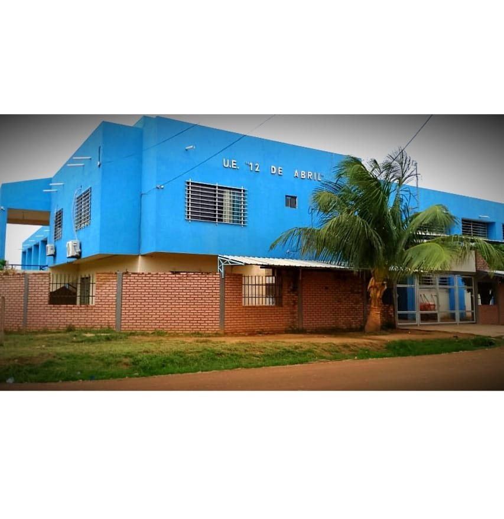
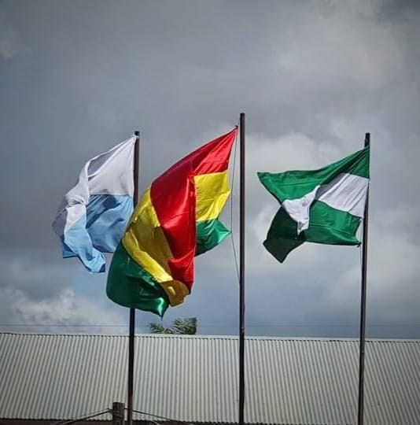

" La Unidad Educativa "12 de Abríl fue fundada el 2 de febrero del año 2002 en el Barrio Oriental, del municipio de San Julián con dos aulas uno de material y otro de madera con techo de motacú; con los cursos de Primero, Segundo y tercero en el nivel Primario con 59 estudiantes y los primeros profesores eran particulares.
Actualmente cuenta con 960 estudiantes nivel inicial, primaria y secundaria con 40 docentes 1 director una secretaria con item y una portera pagada por la alcaldía con las que se pretende culminarla gestión. Los componen de la Junta Escolar son:
Presidente Sr. Rufino Andrade Quila, Stria De actas Sra. Lourdes Orias Morales, Stria de Hacienda Sra. Regina Serrano Zarabia.
La UE. "12 de abril” es una de las Unidades prestigiosas del Municipio gracias a los logros deportivos, artísticos y académicos conseguidos durante sus 21 años de vida. Lema de nuestra unidad educativa. "Somos una de las Unidades Educativas en crecimiento de nuestra población de San Julián al servicio de la niñez y de la juventud estudiosa.